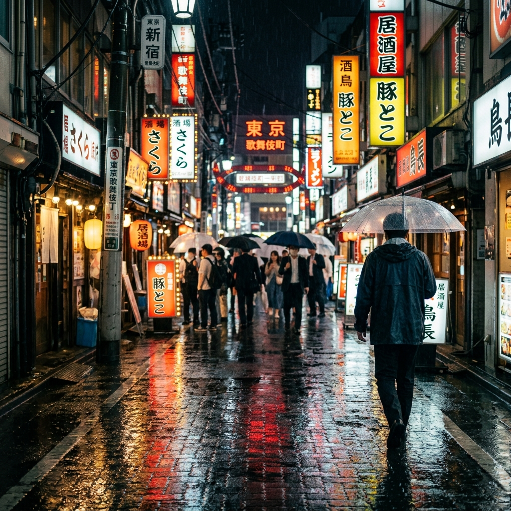
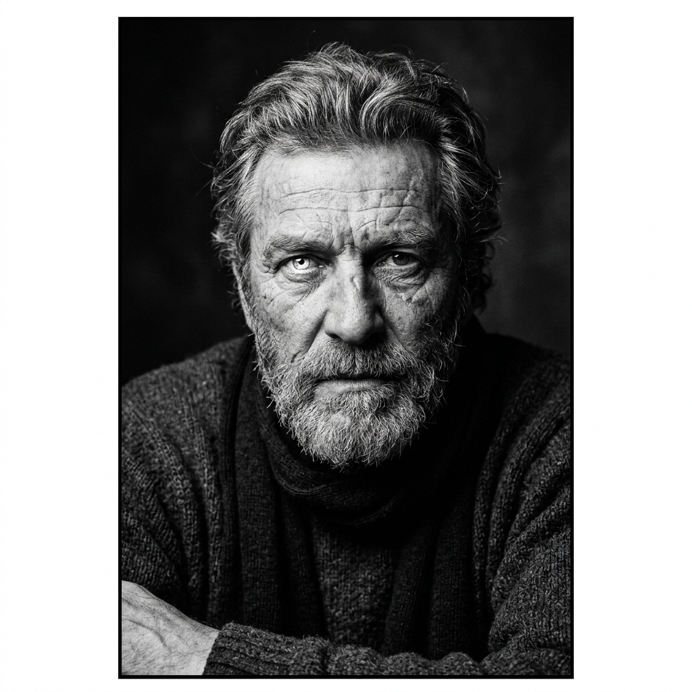
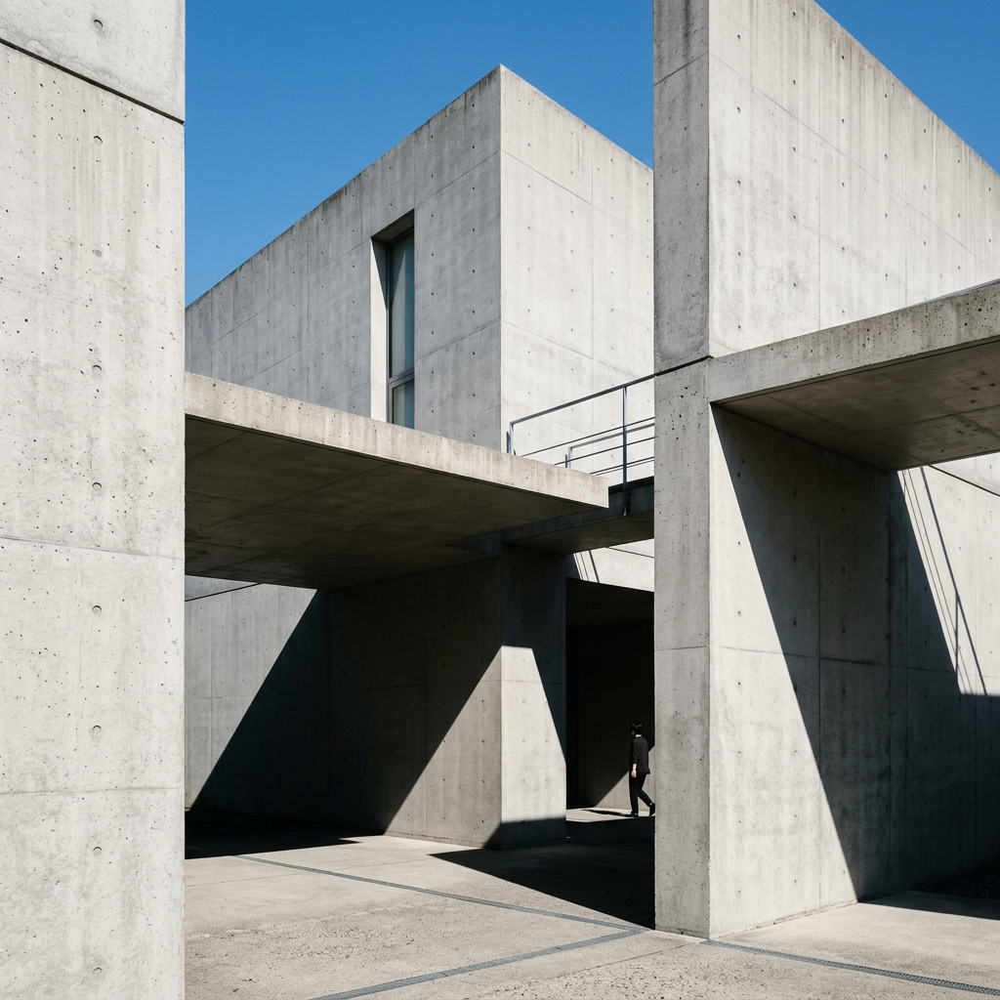
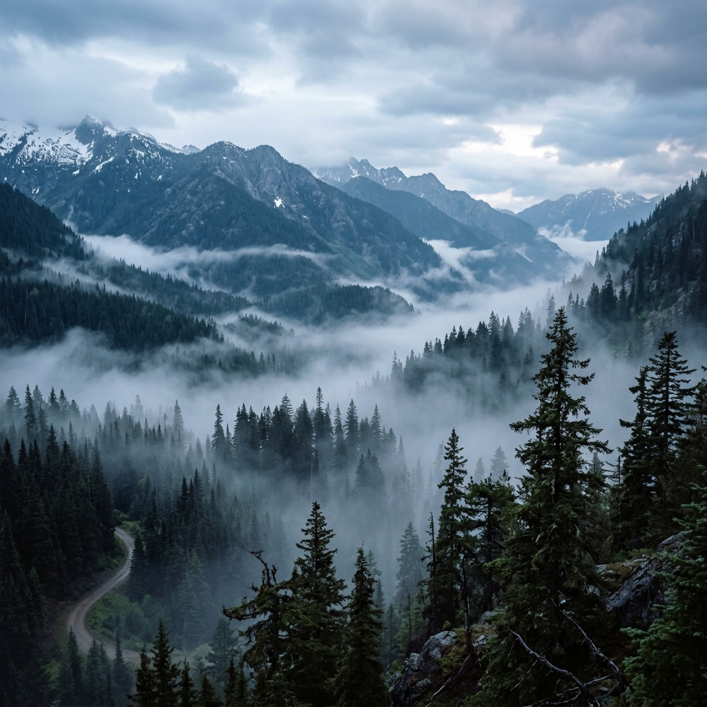
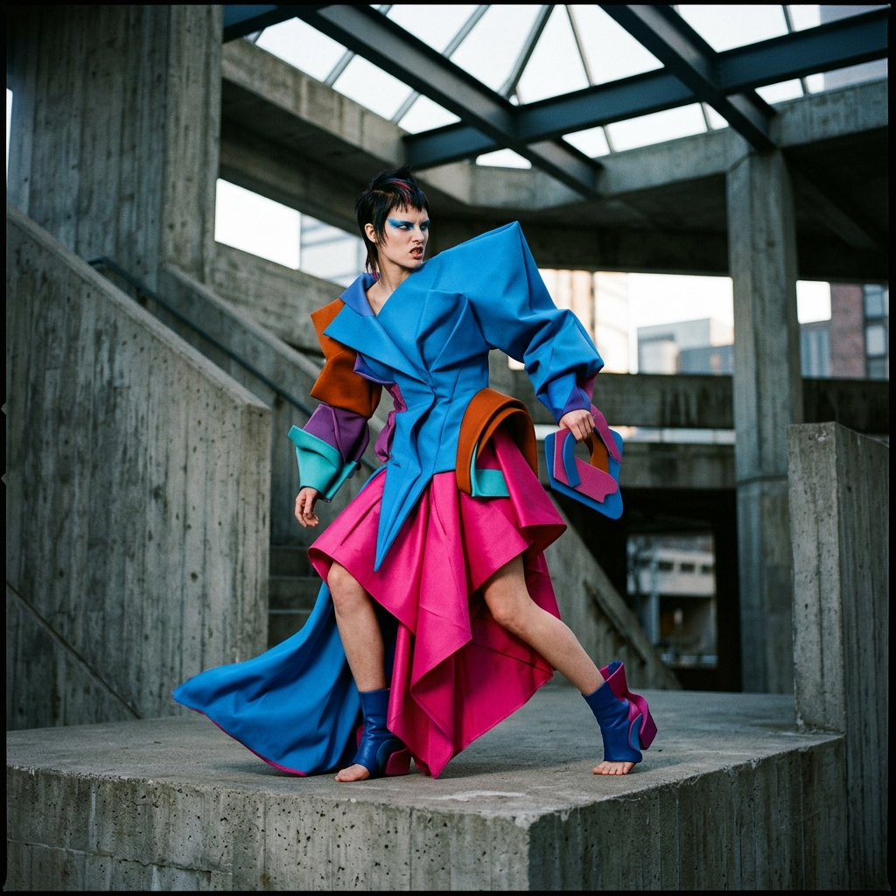

Capturing the poetry of fleeting moments.
A meticulous blend of light, composition, and human experience. Custom-crafted editorial, architectural, and street photography for those who value authentic visual stories.

Curated Work




Bespoke imagery built on intention.
Hello, I'm Ajay. I believe that photography is more than just documenting a scene—it's an act of deep curation, patience, and visual alignment. Over the past decade, I've worked across fashion agencies, architectural firms, and street journals globally, crafting high-impact portfolios and narrative visual experiences.
Every project is treated with a custom aesthetic, prioritizing visual storytelling over technical excess. My goal is to capture the essence of a space, the character of a person, or the ambient atmosphere of an environment in its purest state.
Selected Solo Exhibits
Asymmetry of Shadows
Galerie d'Art, Paris
Muted Ridges & Neon Lanes
Metropolitan Center of Photography, New York
Collaborative Services
Bespoke photographic solutions scaled to meet your creative and commercial projects.
Editorial & Fashion
Dynamic style books, creative direction, model lookbooks, and high-fashion spreads tailored for print or web publication.
- Creative moodboards & styling direction
- Full day or half day shooting options
- High-end retouched deliverables
- Commercial usage licensing
Architecture & Spaces
Professional spatial representations highlighting architectural volume, light transitions, texture, and structural details.
- Interior & exterior twilight sessions
- Perspective corrected compositions
- Drone and high-angle vantage captures
- Architectural review and crop guidelines
Fine Art Prints
Curated museum-grade custom framed prints of street, landscape, and macro collections. Perfect for offices, galleries, and homes.
- Hahnemühle Photo Rag 100% Cotton paper
- Archival pigment ink prints
- Hand-made wood frames (oak, walnut, charcoal)
- Numbered editions with certificates
Let's capture your story.
Whether you have a specific commercial inquiry, want to check print availability, or just want to collaborate on a creative project, feel free to drop a message. Let's make something exceptional.
Inquiry Received
Thank you for reaching out. I've received your details and will review your vision checklist. Expect a personalized response within 24 hours.